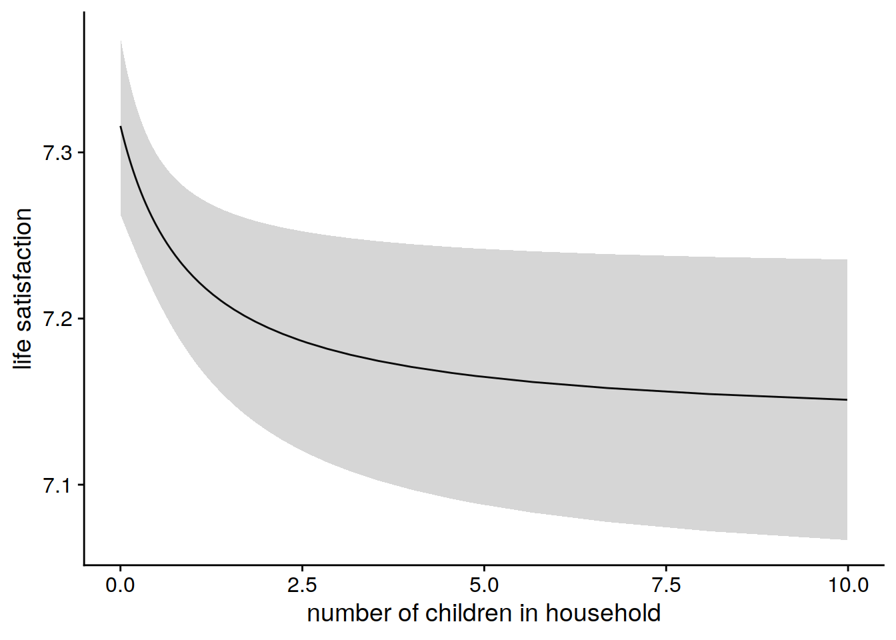
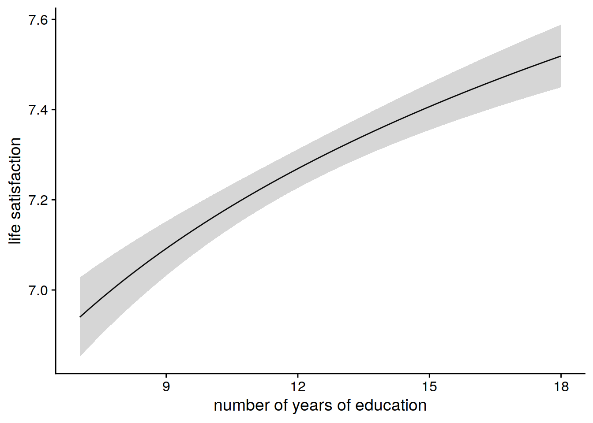
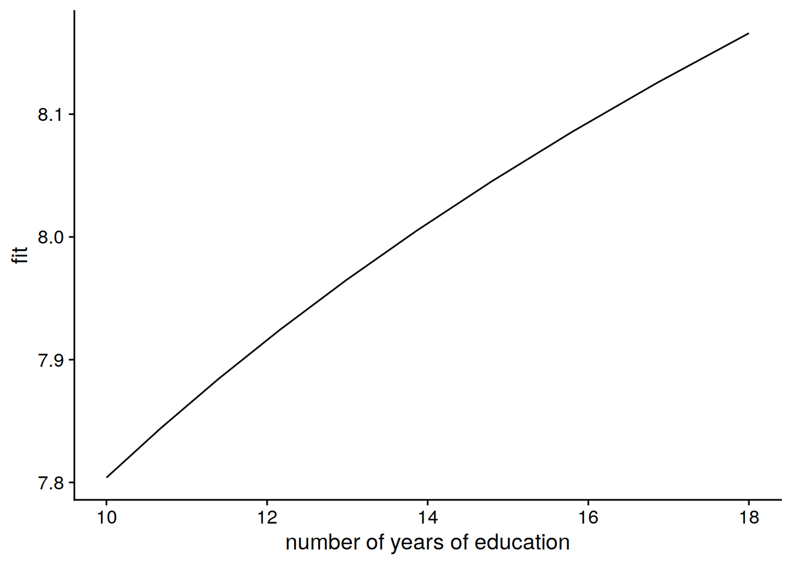

After cleaning, we were left with 23,522 observations of 6355 participants on 12 variables. The variables were: study participant ID, year of observation, participant sex, age at observation, number of persons living with the participant at the time of the observation, number of children living with the participant at the time of observation, number of years of education of the particpant, the participant’s current employment status, the current number of the particpant’s income sources, their current total annual income in euros, their self evaluated general health status on a scale of 1 (bad) to 5 (good), and their self evaluated life satisfaction on a scale of 1 (bad) to 10 (good).
The five-number summary of the the number of times a given participant was observed in the study was: Min = 1, Q1 = 2, Median = 4, Q3 = 5, Max = 5. The participants were observed in consecutive years, from 2015 to 2019. Throughout the study perion, the number of participants dropped, as shown in the plot below, from 5,527 to 3,937. As 5,527 is less than the total number of participants in the study, we see that while some participants left the study after the first year, others joined later.
The minimum age in years of the participants was 17 across each study year, and the max age was around 100. The distribution of age for each study year is shown in the table below.
The study recorded 2533 males to 2994 females in 2015, showing that women were more likely to be recruited (p value less than 0.005; binomial test). We summarise the other variables in the appendix. We note that, for the general health status, and the life satisfaction scores, the distributions remain the same across the years. While general health status is skewed to the left (more participants recorded a score above the scale midpoint) the life satisfaction score is skewed to the right (more participants recorded a score lower than the scale midpoint).
Our mixed-effects regression model was fit to the data. We observed the following fixed effects.
Code
lme_fit %>%summary()
Linear mixed model fit by REML ['lmerMod']
Formula:
life_satisfaction ~ (1 | id) + sex + age + I(age^2) + persons_in_household +
children_in_household + number_of_years_of_education + employment_status +
number_income_sources + total_annual_income + general_health_status
Data: data_imputed
REML criterion at convergence: 79582.3
Scaled residuals:
Min 1Q Median 3Q Max
-6.7600 -0.4268 0.0588 0.5315 4.8288
Random effects:
Groups Name Variance Std.Dev.
id (Intercept) 0.9987 0.9993
Residual 1.1969 1.0940
Number of obs: 23522, groups: id, 6355
Fixed effects:
Estimate Std. Error t value
(Intercept) 3.365741 0.228181 14.750
sexfemale 0.103860 0.031108 3.339
age -2.036259 0.447489 -4.550
I(age^2) 3.067581 0.460758 6.658
persons_in_household 0.332658 0.035031 9.496
children_in_household 0.181329 0.058666 3.091
number_of_years_of_education 0.616040 0.071416 8.626
employment_statuspart_time -0.060928 0.035913 -1.697
employment_statuseducation_apprenticeship -0.137540 0.060996 -2.255
employment_statusirregular_marginal -0.144800 0.046732 -3.099
employment_statusunemployed -0.245931 0.036136 -6.806
employment_statusworkshop_for_disabled_people -0.099853 0.384012 -0.260
number_income_sources 0.054431 0.042815 1.271
total_annual_income 0.009187 0.005636 1.630
general_health_status 0.620443 0.011410 54.377
Correlation matrix not shown by default, as p = 15 > 12.
Use print(x, correlation=TRUE) or
vcov(x) if you need it
As the above table of fixed effects shows, the factor most significantly associated with life satisfaction is general health status (t value 54.377). Other significantly associated factors include the number of people sharing the household with the study participant (t value 9.496), number of years of education the participant has (t value 8.626), Whether or not the particpant is unemployed (t value -6.806) and the participant’s age (t values -4.550 and 6.658 for age and age squared, respectively).
We show the effects of changing these paramter values in the plots below.
We observe no significant difference in life satisfaction between the sexes, i.e. females appear not to be more or less satisfied than men at any statistically significant level.
We observe a ‘U’ shaped dependency of life satisfaction on age: satisfaction starts out moderately high at 17 years old, then dips to a low at around 35 years, and subsequently continues to climb again as participants reach old age. We observe however that the overall change (from minium life satisfaction at 35 to maximum satisfaction at 100) is relatively small.
The number of people sharing the household with the participant is found to be a significant moderator of life satisfaction. Houses with no or few people contain on average people with less life satisfaction than those of houses with many people. The change is most pronounced between homes of 5 people or less, and begins to tail offf as the occupancy number grows beyond 5.
Code
as.data.frame(predictorEffect("children_in_household", lme_fit)) %>%mutate(children_in_household = (children_in_household)^(-1) -1) %>%ggplot(aes(x=children_in_household, y=fit)) +geom_line() +geom_ribbon(aes(ymin = lower, ymax = upper), alpha =0.2) +labs(y="life satisfaction", x='number of children in household') +theme_cowplot()

For fixed household occupancy number, an increase in number of children in the same household we find actually decreses life satisfaction. The change is most pronounced for small households, and begins to plateu as the number of children in the same house grows by more than 2 (for fixed number of total occupants). However, the overall effect is relatively small, as can be seen in the y axis of the plot above.
Code
as.data.frame(predictorEffect("number_of_years_of_education", lme_fit)) %>%mutate(number_of_years_of_education =exp(number_of_years_of_education)) %>%ggplot(aes(x=number_of_years_of_education, y=fit)) +geom_line() +geom_ribbon(aes(ymin = lower, ymax = upper), alpha =0.2) +labs(y="life satisfaction", x='number of years of education') +theme_cowplot()

The number of years of education a participant has, once age and income have been accounted for, is found to correlate significantly with life satisfaction, and the overall size of the effect is reasonably pronounced. The model predicts that, for an additional 9 years of education life satisfaction grows almost constantly year by year, and the overall difference in life satisfaction gained through these years on average is about 0.6 points.
Employement status is found to significantly moderate life satisfaction. The most mnotable difference is between unemployed participants and the rest of the cohort. The t value for this association is -6.806, which is similar to that of the association between number of years of education and lie satisfaction. Again we note that, while the effect is significant, the overal size of this effect is small in comparison to some of the other factors.
Code
as.data.frame(predictorEffect("number_income_sources", lme_fit)) %>%ggplot(aes(x=number_income_sources, y=fit)) +geom_line() +geom_ribbon(aes(ymin = lower, ymax = upper), alpha =0.2) +labs(y="life satisfaction", x='number of income sources') +theme_cowplot()
Both the number of income sources of a participant, and their total annual income in Euros, is not found to significantly associate with life satisfaction, as in both plots above, horizontal lines are conistent with the error margins shown in grey across the whole range of income, and number of income soures. In short: we find no significant evidence in this study to suggest that an increase in income translates to an increase in life satisfaction.
Of all the factors included in this study, general health status has the most significant association with life expectancy, i.e. the highest t value: 54.377. As the participant’s assessment of their general health declines, their assessment of their life satisfaction also declines in a linear relationship. The size of the effect is also the largest in the model: for a change in self assessed general health status from 1 to 5 we observe a drop in life expectancy of 2 points. This is the largest change in life expectancy points with respect to the range of observed values of any independent variable in the model.
Predictions for subject 11390
In this section we show some model predictions for a fixed participant in the study, to further illustrate our model. We chose the participant with study id 11390. This participant is female. She entered the study in 2015 at 17 years old. They remained with the study throughout its duration, and were followed up from 2015 to 2019, where they left the study at 20 years old. Throughout the study there remained 5 people in their home, but the number of children changed from 3 in 2015 to only 1 in 2019. This implies that there were two parents in the home woith 3 teenage children, and as the study years passed two of the children (including the study participant) turned 18, and hence become redefined as an adult in the study data. At the start of the study they were in an apprenticeship, and by 2019 they had left the apprenticeship and found full time work. Their general health status remained constant at 4 over the study period, and their life satisfaction remained constant at 8 acorss the final 3 years of the study. The life satisfaction report was missing for their 2015 observation.
We first used our model to predict how their life satisfaction will change over the next decade, from age 20 to age 30, assuming they remain in full time employment, with fixed general health status and a fixed annual income of 20000 Euros.
As we see in the plot, their life satisfaction is expected to drop over the decade by approximately 0.05 points. They are predicted to not reach their lifetime minimum satisfaction value during this age interval.
Next we predicted how their life satisfaction might be different if, at 30 years of age, they lived in homes with different numbers of people. We assumed they are still employed full time with an annual salary of 20000 euros, and 1 child in the home.
Their life expectancy is predicted to increase sharply for increases in houshold occupancy number for smaller households, and less drammatically for larger households.
Next, we predicted how their life satisfaction at 30 years of age would change if they had taken on more or less education over the period from age 20 to age 30. We hold all other variables fixed. We assume they live with 1 child, 3 people in the household, full time employment, and a fixed annual salary of 20000 euros.
Code
data.frame(id='11390',sex='female',age=30/100,persons_in_household=log(3),number_of_years_of_education=seq(from=log(10), to=log(18), length.out=10),employment_status='full_time',children_in_household=1,number_income_sources=1,total_annual_income=log(20000+1),general_health_status=4) %>%as_tibble() -> prediction_lattice_11390prediction_lattice_11390 %>%mutate(fit =predict(lme_fit, prediction_lattice_11390, re.form =NULL)) -> predictions_11390predictions_11390 %>%mutate(number_of_years_of_education =exp(number_of_years_of_education)) %>%ggplot(aes(x=number_of_years_of_education, y=fit)) +geom_line() +labs(x='number of years of education', x='life satisfaction') +theme_cowplot()

We predict a near constant increase in life satisfaction across the period. We observe a difference of 0.4 satisfaction points between no extra education and an additional 8 years of education between the ages of 20 and 30.
Finally, we asked how this study participant’s life satisfaction would change at 20 years old if their health status drammatically shifted. Again we assumed they were in full time employment, stayed in the same household they lived in at the end of the study (5 people, 1 child), and had an annual income of 20000 euros.
We predict their life expectancy to drop 3 points, from 9 (very satisfied) to 6 (less satisfied), as their health condition deteriorates from a level 1 (good) to 5 (worst). We note that, even in the case where their self-assed health is at its lowest, their life satisfaction still remains above the mid point of the 10 point scale.